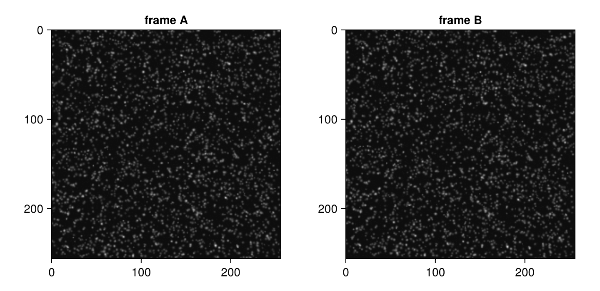
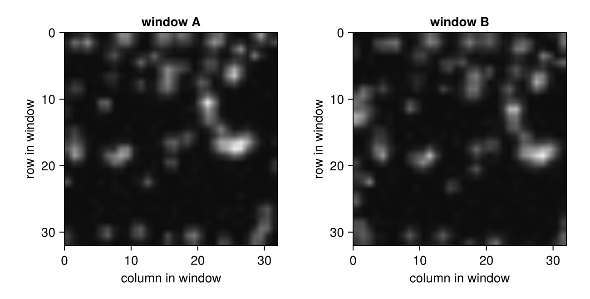
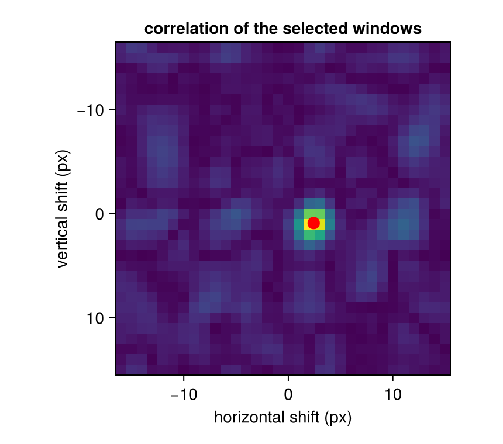
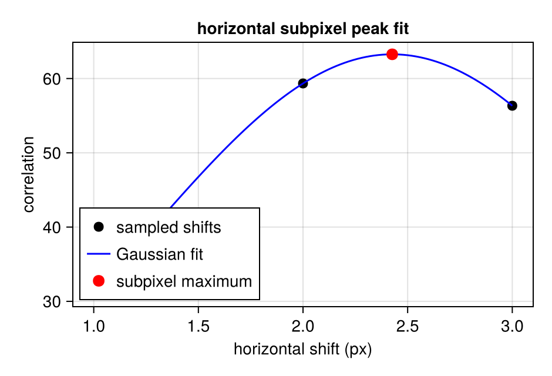
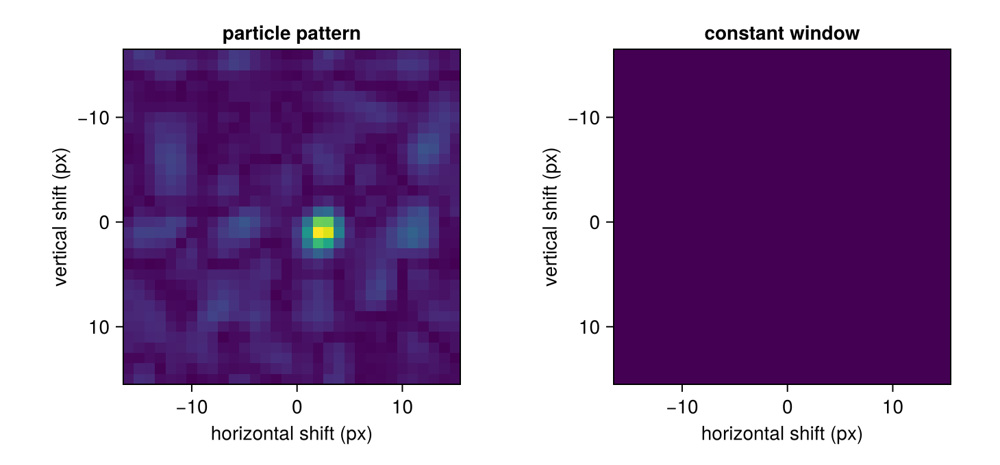
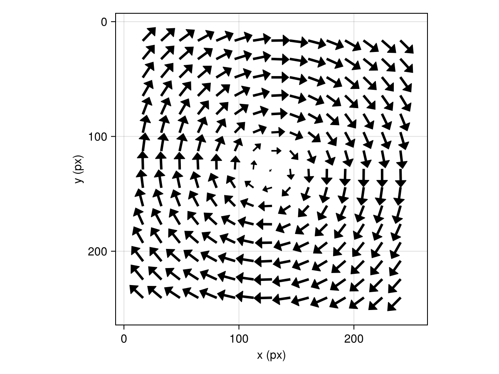
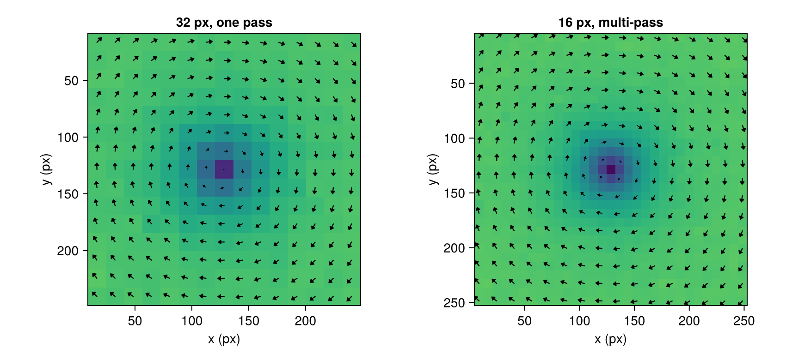
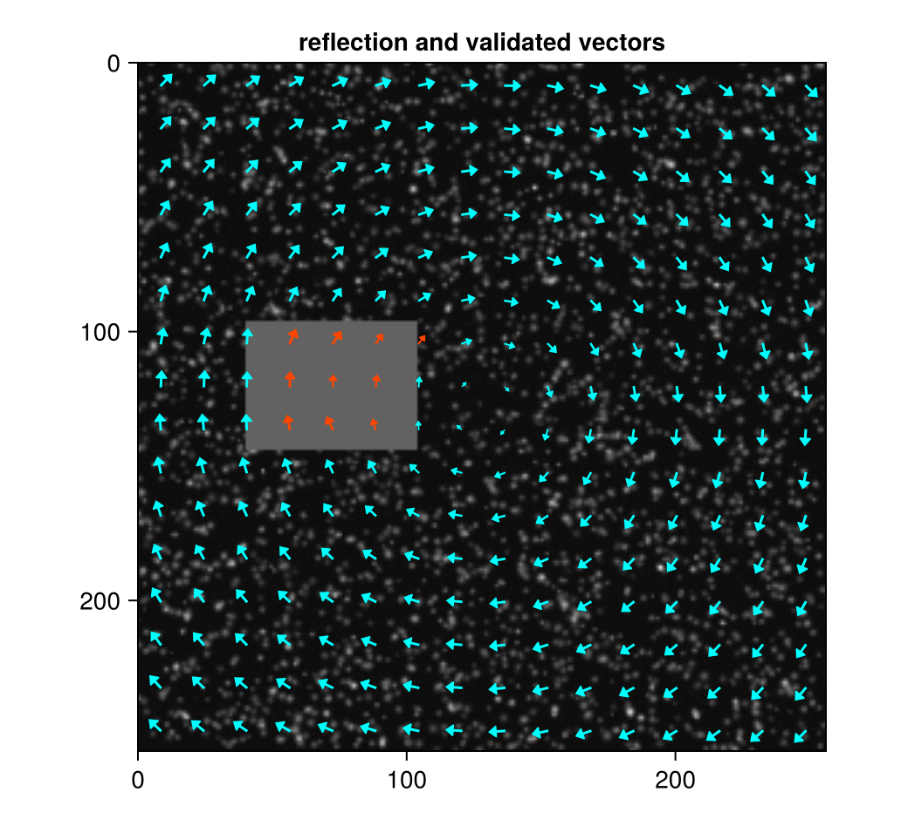

Your first vector field
This tutorial follows one particle-image pair from a single measured displacement to a vector field. You will inspect the correlation peak, compare two interrogation schedules, mark an image region that should be excluded, and convert the result to physical units.
Make an image pair
Particle image velocimetry (PIV) measures how a pattern of tracer particles moves between two exposures. We use a smooth synthetic vortex so we can later compare the measured displacements with known particle motion. The code below makes two 256 × 256 pixel frames separated by one frame interval.
using Hammerhead
using Hammerhead.SyntheticData
using Random
using CairoMakie
using Statistics: median
function flow(x, y, z, t)
dx, dy = x - 128.0, y - 128.0
rate = 3.0 / sqrt(dx^2 + dy^2 + 30.0^2)
return (-rate * dy, rate * dx, 0.0)
end
imgA, imgB, _, _ = generate_synthetic_piv_pair(
flow, (256, 256), 1.0;
particle_density = 0.05,
background_noise = 0.03,
z_range = (-1.0, 1.0),
rng = MersenneTwister(42),
)([0.031031502862142304 0.0 … 1.5138904452467428 0.4406058066504688; 0.0 0.007805029870754142 … 1.058618622967402 0.4483927037042605; … ; 0.03444037751267632 0.041776247354604945 … 0.5971645145668342 0.00438375692164264; 0.002397312134944738 0.026762008962283833 … 0.0481546432347918 0.010729164842007428], [0.018308061649635967 0.0 … 0.03821065834922099 0.08674210372446813; 0.026040490975457915 0.0 … 0.2984467834315068 0.7347121642420787; … ; 0.011054175927132738 0.0 … 0.0 0.0; 0.0 0.043966437289037666 … 0.03817920534742313 0.020480569351883287], Hammerhead.SyntheticData.ParticleField3D{Float64}([181.97091003992227, 16.508224281171636, 122.32771611313024, 45.49358222836031, 13.70109119564114, 77.59181473121134, 114.57981927881599, 36.759259680694015, 53.43430126545553, 118.43530910079932 … 255.3353975116986, 60.559693081200635, 177.95479422868345, 243.40777471953794, 191.84525818853842, 16.110669175523356, 114.12407929016206, 173.85120501087016, 254.69409589909702, 142.60520975296612], [62.548088776778854, 106.07266373713378, 250.73374682126695, 15.89447973008032, 229.3824726749628, 215.52365541209622, 50.938108583258895, 252.6824290683847, 174.64958011524402, 6.003760500023759 … 10.043691573284207, 62.10314362877233, 170.1030625113729, 6.754017928152052, 231.93156659117335, 18.308732666755077, 224.25162894258767, 213.27691419436673, 0.5428477555998938, 98.68544202400108], [-0.9829438286146064, 0.11241439417952748, 0.5558786454753935, 0.19142827262506046, 0.20558041814205685, -0.8999938060780845, -0.7863054200148967, -0.6482265790295725, 0.327589662878903, 0.9675436756663998 … 0.05787900236951371, -0.859627597448946, 0.9073400815481056, -0.1159512000762466, -0.38704518755666273, 0.6805186684349964, -0.15572992345915182, 0.1860588553831808, -0.13330001995851593, -0.9097154474441105], [0.9301423277164212, 0.9724436923583771, 1.023398612178672, 0.8252853282326251, 0.9032825542416446, 0.8152129452058476, 1.016532758511328, 0.8771303385169829, 1.3385919679271152, 1.1621513438102098 … 0.5056149242582608, 1.3281193271309137, 1.1111074841938136, 1.187572387863832, 0.8794826318522255, 1.3723260672627131, 1.5082203449161273, 0.8600431913030575, 0.7995595105496531, 1.0108871162157158], [3.2381971199538224, 3.296896046519049, 3.3504502968017094, 2.86962632757962, 2.9363188321777107, 2.543162855226688, 3.7282415910371225, 2.92097436194313, 2.507308959525372, 3.636242644840193 … 2.7202833578535976, 3.2428858682928623, 2.525251277939476, 3.9534229464305035, 2.94136833377493, 1.8009758592173828, 2.972949941411451, 2.800265697024939, 2.9146355433320488, 3.2761516390374092]), Hammerhead.SyntheticData.ParticleField3D{Float64}([184.15306990895388, 17.0679703406452, 119.41644280568802, 47.855519101238826, 11.747677981553917, 75.09975580113523, 117.33934564520578, 34.38264697604202, 51.928363670072805, 121.34011268260718 … 257.3443310842362, 62.55762876977992, 176.19781181570346, 245.546686636562, 189.3630230219841, 18.173375977393444, 111.28672159123282, 171.3273017880605, 256.7927355817105, 144.5852726464283], [64.34747326812813, 103.22657785719905, 250.59919891492683, 14.156162563229401, 227.1801886615317, 214.08838436843897, 50.45754235446558, 250.94325936945475, 172.2424568619816, 5.776019477048304 … 12.212361977144841, 60.05841185457739, 172.18770171974697, 8.789937473251443, 233.4564059666513, 16.204692031987136, 223.84258702934093, 214.63395208897063, 2.628923370225601, 99.67195643458021], [-0.9829438286146064, 0.11241439417952748, 0.5558786454753935, 0.19142827262506046, 0.20558041814205685, -0.8999938060780845, -0.7863054200148967, -0.6482265790295725, 0.327589662878903, 0.9675436756663998 … 0.05787900236951371, -0.859627597448946, 0.9073400815481056, -0.1159512000762466, -0.38704518755666273, 0.6805186684349964, -0.15572992345915182, 0.1860588553831808, -0.13330001995851593, -0.9097154474441105], [0.9301423277164212, 0.9724436923583771, 1.023398612178672, 0.8252853282326251, 0.9032825542416446, 0.8152129452058476, 1.016532758511328, 0.8771303385169829, 1.3385919679271152, 1.1621513438102098 … 0.5056149242582608, 1.3281193271309137, 1.1111074841938136, 1.187572387863832, 0.8794826318522255, 1.3723260672627131, 1.5082203449161273, 0.8600431913030575, 0.7995595105496531, 1.0108871162157158], [3.2381971199538224, 3.296896046519049, 3.3504502968017094, 2.86962632757962, 2.9363188321777107, 2.543162855226688, 3.7282415910371225, 2.92097436194313, 2.507308959525372, 3.636242644840193 … 2.7202833578535976, 3.2428858682928623, 2.525251277939476, 3.9534229464305035, 2.94136833377493, 1.8009758592173828, 2.972949941411451, 2.800265697024939, 2.9146355433320488, 3.2761516390374092]))You can use load_image("frame_0001.tif") and the next recorded frame in place of these arrays. Each image is a matrix: rows run downward and columns run rightward.
let
fig = Figure(size = (720, 350))
for (k, (img, name)) in enumerate(((imgA, "frame A"), (imgB, "frame B")))
ax = Axis(fig[1, k]; title = name, yreversed = true, aspect = DataAspect())
image!(ax, img'; colormap = :grays)
end
fig
end
What does one vector measure?
run_piv divides the pair into interrogation windows. Within each window it finds the shift that best aligns the particle patterns. That gives one displacement for a group of particles, not one path per particle. The first pass below uses 32 × 32 pixel windows at 50% overlap. We retain its correlation planes so we can inspect one; turn this option off for a large dataset because it stores a matrix for every vector.
basic = run_piv(imgA, imgB,
PIVParameters(window_size = 32, overlap = 16,
keep_correlation_planes = true))PIVResult{Float64}(15×15 grid, 0 outliers)Choose a window in the upper-right part of the vortex. Its grid coordinates are in pixels, with x along columns and y along rows. The window starts half a window width before its center in each direction.
i, j = 5, 9
row0 = round(Int, basic.y[i] - 15.5)
col0 = round(Int, basic.x[j] - 15.5)
rows, cols = row0:(row0 + 31), col0:(col0 + 31)
windowA, windowB = @view(imgA[rows, cols]), @view(imgB[rows, cols])([0.001757722978563088 0.1433260039518015 … 0.3253951879153073 0.11982226041441597; 0.21226428405485182 0.8073929502215629 … 0.23370801748105097 0.4907954566034487; … ; 0.3708024712407943 0.11984981873362058 … 0.1937623080747172 0.0; 0.3134899432581865 0.08187883998367254 … 0.11104643865159075 0.0021628645826982117], [0.0243684455640153 0.02274368559043915 … 0.21655177375873616 0.7803242897108797; 0.12068223612774073 0.015131727163932185 … 0.08981801735932796 0.913381312632528; … ; 0.5067523622787214 0.7331048734955303 … 0.14045520851150198 0.7595441851895381; 0.3366015098817635 0.564925757904974 … 0.322016583438358 0.6754116275160517])Predict the sign before inspecting the result: particles above and right of the vortex center move mostly rightward, so u should be positive. The two windows show the local pattern that contributes to this vector.
let
fig = Figure(size = (650, 330))
for (k, (win, name)) in enumerate(((windowA, "window A"), (windowB, "window B")))
ax = Axis(fig[1, k]; title = name, yreversed = true, aspect = DataAspect(),
xlabel = "column in window", ylabel = "row in window")
image!(ax, win'; colormap = :grays)
end
fig
end
The retained plane scores possible shifts. Its center is zero shift; the brightest peak is the best alignment. Correlating the same two windows with the exported low-level correlate function also gives the integer peak and its three-point Gaussian subpixel fit. The plane retained by run_piv and the one returned by correlate use the same settings.
plane = basic.correlation_planes[i, j]
probe = correlate(CrossCorrelator{Float64}((32, 32)), windowA, windowB)
center_lag = size(plane) .÷ 2 .+ 1
(integer_peak = probe.peakloc,
refined_peak = probe.refined_peakloc,
zero_lag = center_lag,
measured = (basic.u[i, j], basic.v[i, j]),
probe = (probe.du, probe.dv))(integer_peak = (18, 19), refined_peak = (17.894672197357014, 19.426279761674024), zero_lag = (17, 17), measured = (2.4262797616740244, 0.8946721973570142), probe = (2.4262797616740244, 0.8946721973570142))Read horizontal lag from the peak's column offset and vertical lag from its row offset. Subpixel fitting places the estimate between matrix cells. A particle at (row, col) in A found at (row + v, col + u) in B has positive u to the right and positive v downward.
let
lags = (1:size(plane, 1)) .- center_lag[1]
fig = Figure(size = (430, 380))
ax = Axis(fig[1, 1]; title = "correlation of the selected windows",
xlabel = "horizontal shift (px)", ylabel = "vertical shift (px)",
aspect = DataAspect(), yreversed = true)
heatmap!(ax, lags, lags, plane'; colormap = :viridis)
scatter!(ax, [probe.du], [probe.dv]; color = :red, markersize = 15)
fig
end
Zoom in on the three samples around the peak along the horizontal axis. The default subpixel method fits a Gaussian to their heights. Its maximum falls between the sampled shifts, giving the fractional part of u.
peak_row, peak_col = probe.peakloc
neighbor_cols = (peak_col - 1):(peak_col + 1)
heights = plane[peak_row, neighbor_cols]
log_heights = log.(heights)
a = (log_heights[1] + log_heights[3]) / 2 - log_heights[2]
b = (log_heights[3] - log_heights[1]) / 2
subpixel_offset = -b / (2a)
δ = -1.0:0.02:1.0
lag_x = peak_col - center_lag[2]
let
fig = Figure(size = (470, 320))
ax = Axis(fig[1, 1]; title = "horizontal subpixel peak fit",
xlabel = "horizontal shift (px)", ylabel = "correlation")
scatter!(ax, neighbor_cols .- center_lag[2], heights;
color = :black, markersize = 12, label = "sampled shifts")
lines!(ax, lag_x .+ δ,
exp.(a .* δ.^2 .+ b .* δ .+ log_heights[2]);
color = :blue, label = "Gaussian fit")
scatter!(ax, [lag_x + subpixel_offset],
[exp(log_heights[2] - b^2 / (4a))];
color = :red, markersize = 14, label = "subpixel maximum")
axislegend(ax; position = :lb)
fig
end
The peak needs a particle pattern. A constant pair contains no shift information: mean subtraction leaves a flat correlation plane. Its first matrix entry is still an argmax, but that index is not a measurement. Inspect image quality before interpreting an isolated vector; the image-quality guide covers recorded images.
blank = fill(0.5, 32, 32)
blank_probe = correlate(CrossCorrelator{Float64}((32, 32)), blank, blank)
(useful_peak = maximum(plane), blank_peak = maximum(blank_probe.correlation),
blank_plane_range = extrema(blank_probe.correlation))
let
fig = Figure(size = (730, 340))
for (k, (R, title)) in enumerate(((plane, "particle pattern"),
(blank_probe.correlation, "constant window")))
ax = Axis(fig[1, k]; title, xlabel = "horizontal shift (px)",
ylabel = "vertical shift (px)", aspect = DataAspect(),
yreversed = true)
heatmap!(ax, (1:size(R, 2)) .- center_lag[2],
(1:size(R, 1)) .- center_lag[1], R';
colormap = :viridis, colorrange = (0, maximum(plane)))
end
fig
end
From one vector to a field
Plot the first-pass field. Neighboring 32 px windows overlap by 16 px, so vector centers are 16 px apart. Overlap samples the field more often; it does not make each measurement sensitive to features smaller than its 32 px particle-sampling window.
plot_vector_field(basic)
A multi-pass schedule begins with 64 px windows and uses each measured field to deform the images for the next pass. Later 32 and 16 px windows measure the remaining shift with more local detail. Repeating 16 px gives the final deformation a convergence sweep before estimating uncertainty. Predict where the 16 px field will show more variation than the basic one.
passes = multipass_parameters([64, 32, 16, 16];
padding = true, apodization = :gauss, uncertainty = true)
fine = run_piv(imgA, imgB, passes)PIVResult{Float64}(31×31 grid, 0 outliers)Use the same color range and arrow length scale in both panels. Each panel shows displacement magnitude below the arrows. The finer grid resolves changes over shorter distances, especially near the vortex core.
let
fig = Figure(size = (850, 390))
for (k, (r, title)) in enumerate(((basic, "32 px, one pass"),
(fine, "16 px, multi-pass")))
ax = Axis(fig[1, k]; title, yreversed = true, aspect = DataAspect(),
xlabel = "x (px)", ylabel = "y (px)")
speed = hypot.(r.u, r.v)
heatmap!(ax, r.x, r.y, speed'; colorrange = (0, 4), colormap = :viridis)
plot_vector_field!(ax, r; stride = k == 1 ? 1 : 2, lengthscale = 2)
end
fig
end
Both fields report displacement in pixels per frame interval. The difference in grid density reflects the final window size and overlap; compare local changes and flagged vectors before deciding which resolution serves your measurement.
Validate a difficult region
Add a static bright patch to both frames, as a reflection might appear in recorded images. A zero-shift peak inside it can disagree with neighboring flow vectors. Universal outlier detection flags vectors that differ from nearby measurements. With replace_outliers = true, the returned u and v at flagged positions hold local-median replacements, while outliers retains the flag. Replacements are estimates, not new particle measurements.
imgA_refl, imgB_refl = copy(imgA), copy(imgB)
for img in (imgA_refl, imgB_refl)
img[97:144, 41:104] .= 1.0
end
with_reflection = run_piv(imgA_refl, imgB_refl, passes)
(flagged = count(with_reflection.outliers),
affected_region = count(with_reflection.outliers[:, 1:7]))(flagged = 47, affected_region = 14)Overlay the vectors on the image. Orange arrows are flagged replacements; cyan arrows are retained measurements. A partly covered window can still be biased without being flagged.
let
fig = Figure(size = (520, 470))
ax = Axis(fig[1, 1]; title = "reflection and validated vectors",
yreversed = true, aspect = DataAspect())
image!(ax, imgA_refl'; colormap = :grays)
plot_vector_field!(ax, with_reflection; stride = 2,
color = :cyan, replaced_color = :orangered,
lengthscale = 2)
fig
end
Mask the known reflection. Windows whose masked fraction reaches the configured threshold are excluded from the field, validation, and statistics. mask and outliers remain distinct in the result.
mask = falses(size(imgA))
mask[97:144, 41:104] .= true
masked = run_piv(imgA_refl, imgB_refl, passes; mask)
(masked_windows = count(masked.mask), remaining_outliers = count(masked.outliers))(masked_windows = 59, remaining_outliers = 2)Read uncertainty and convert units
uncertainty = true estimates the random displacement uncertainty of each final-pass correlation (Wieneke, 2015). It is stored separately from outliers: a vector can have an uncertainty estimate without being flagged, and a replacement remains flagged. The estimate does not measure systematic errors such as calibration bias. Inspect valid, finite values:
valid = .!(fine.mask .| fine.outliers)
σu = filter(isfinite, fine.uncertainty_u[valid])
(valid_vectors = count(valid), median_uncertainty_u_px = median(σu))(valid_vectors = 961, median_uncertainty_u_px = 0.014146684396168651)To express velocity, suppose a calibration target established 0.02 mm per pixel and the camera exposures were 1 ms apart. These values illustrate the conversion; use your measured calibration and timing for real data. Attach them to the pixel result, then convert to mm and mm/s. Select the fine-grid point nearest the window inspected earlier.
scale = PhysicalScale(pixel_size = 0.02, dt = 0.001,
length_unit = "mm", time_unit = "s")
scaled = with_scale(fine, scale)
velocity = physical(scaled)
fine_i = argmin(abs.(fine.y .- basic.y[i]))
fine_j = argmin(abs.(fine.x .- basic.x[j]))
(pixel_displacement = fine.u[fine_i, fine_j],
velocity_mm_per_s = velocity.u[fine_i, fine_j],
x_mm = velocity.x[fine_j],
uncertainty_mm_per_s = velocity.uncertainty_u[fine_i, fine_j])(pixel_displacement = 2.489929147662054, velocity_mm_per_s = 49.79858295324108, x_mm = 2.89, uncertainty_mm_per_s = 0.38002295980370004)fine.u remains in pixels. The converted velocity uses u × 0.02 / 0.001; physical also scales positions and uncertainty. See Scale results to physical units for attaching calibration to saved results and Uncertainty quantification for interpreting the uncertainty estimate.
Optional: check against synthetic truth
The image generator advances each particle from its starting position. Multi-pass PIV attributes a vector to the trajectory midpoint, so a reference evaluated at x - u/2, y - v/2 is a closer comparison for curved flow. error_statistics excludes masked and flagged vectors. This check is available because the flow was prescribed; on a recording, use the diagnostics above to assess the measurement.
midpoint_reference(r) = (
[flow(x - r.u[i, j] / 2, y - r.v[i, j] / 2, 0.0, 0.0)[1]
for (i, y) in enumerate(r.y), (j, x) in enumerate(r.x)],
[flow(x - r.u[i, j] / 2, y - r.v[i, j] / 2, 0.0, 0.0)[2]
for (i, y) in enumerate(r.y), (j, x) in enumerate(r.x)],
)
u_ref, v_ref = midpoint_reference(fine)
err = error_statistics(fine, u_ref, v_ref)
(rms_u_px = err.rms_u, rms_v_px = err.rms_v, bias_u_px = err.bias_u)(rms_u_px = 0.028638241558620988, rms_v_px = 0.028061323017805704, bias_u_px = 0.0005482984340204934)Where to go next
- Apply this workflow to a wind-tunnel recording.
- Inspect seeding, focus, and illumination with the image-quality guide.
- Process a recording with many pairs and summarize it in the sequence tutorial.
- Draw masks with the masking guide.
- Tune outlier handling with Tune validation.
This page was generated using Literate.jl.